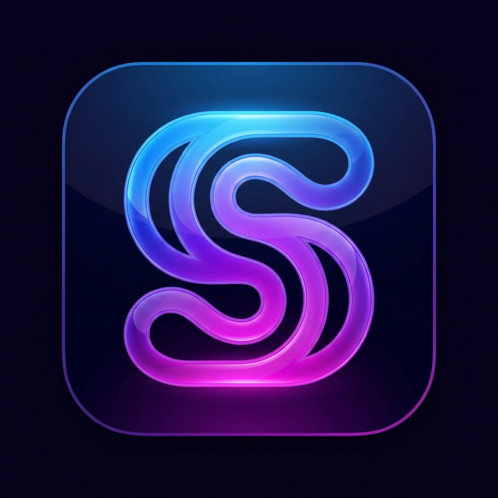

プログラミング言語タグ辞典
言語名を指定すると、代表的なタグ/キーワードに加えて、関数・変数の呼び方と使い方も表示します。
入力例: python / js / java / csharp / html / css / sql / go / rust

言語名を指定すると、代表的なタグ/キーワードに加えて、関数・変数の呼び方と使い方も表示します。
入力例: python / js / java / csharp / html / css / sql / go / rust